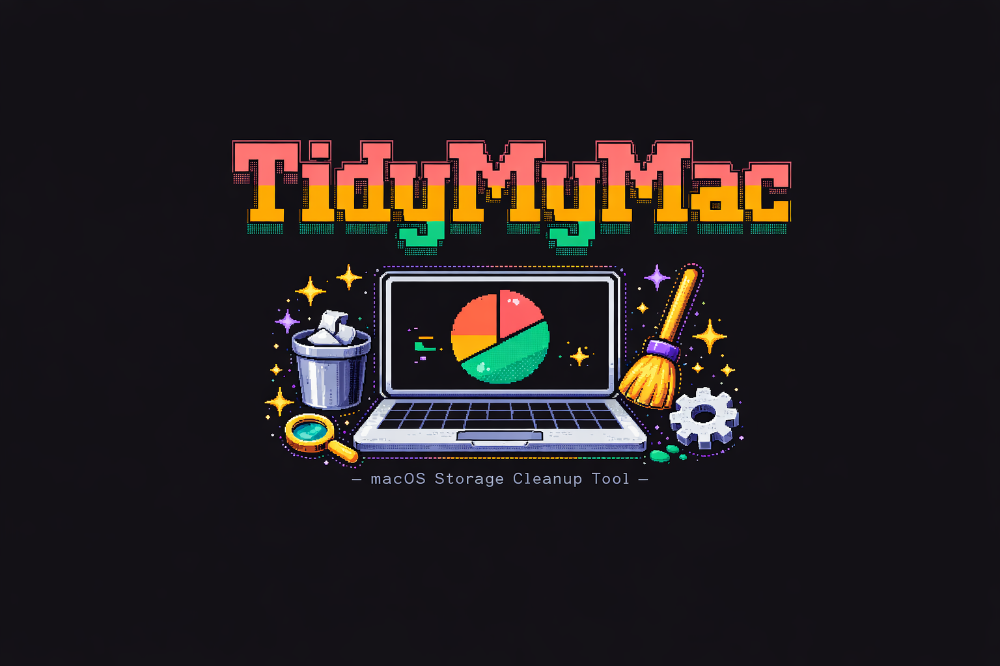

macOS Storage Cleanup Tool
The open-source macOS cleanup utility for developers. Find the junk hiding in caches, logs, and vague categories like System Data — and remove it safely, transparently, without ever leaving the terminal.
curl -fsSL https://raw.githubusercontent.com/viniciussouzao/tidymymac/main/install.sh | sh
// demo
Every file is shown before removal. Nothing happens silently, nothing happens without you.
The interactive demo opens the dashboard and scans the Mac, selects cleanup categories, reviews the files found, and finishes with a dry-run summary showing what could be reclaimed without deleting anything.
The command-line demo scans Trash, Downloads, and Homebrew caches, reports cleanup statistics, explains the macOS System Data category, and displays safety badges for each cleanup risk level.
// features
No daemons, no background agents, no magic. A single binary that inspects first and deletes only what you approve.
Browse categories, see sizes, and select exactly what to clean from a keyboard-driven interface.
Scanning and reviewing never touches a file. Deletion only happens with an explicit --execute.
A hard block no cleaner can ever touch — whatever flags you pass. No CLI override exists.
From ~/Library/Caches to Docker, Xcode and node_modules — target one or all.
Bundle the categories and project directories you clean together, then run them in one command.
Pipe scan results anywhere. Save timestamped reports, or feed them to your own tooling.
Turn any scan into a reviewable shell cleanup script with --generate-script.
Live progress while scanning and a full summary of reclaimed space when you're done.
// cleaners
Every cleaner is modular and independently targetable:
tidymymac clean docker caches xcode
// safety first
TidyMyMac was designed with safety as the primary concern. It inspects first, reviews before deleting, and stays fully terminal-native.
--execute# Never delete anything under this path, whatever flags are passed
$ tidymymac protect --path ~/Documents/Work
# Preview what would be deleted (dry-run, default)
$ tidymymac clean
# Actually delete — only after you've reviewed
$ tidymymac clean --execute▊
// install
Pick your poison. Then just run tidymymac.
# Install the latest release to /usr/local/bin
$ curl -fsSL https://raw.githubusercontent.com/viniciussouzao/tidymymac/main/install.sh | sh
# Pin a version or choose the install dir via env vars
$ TIDYMYMAC_VERSION=v1.1 … | sh
# From the official tap
$ brew install viniciussouzao/tap/tidymymac
# Requires Go 1.26+ — make sure $(go env GOPATH)/bin is in your PATH
$ go install github.com/viniciussouzao/tidymymac/cmd/tidymymac@latest
# Build from source
$ git clone https://github.com/viniciussouzao/tidymymac
$ cd tidymymac && make build
$ ./bin/tidymymac
requires macOS · full disk access recommended for Trash & a few other categories